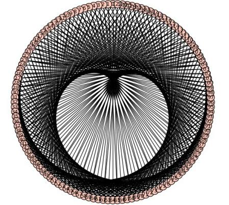

In this note we study the digits of \(\left(\frac{3}{2}\right)^n\xi\) for
arbitrary \(\xi>0\) and show that in
the dyadic decomposition of \([0,1]\)
into \(2^n\) intervals, at least \(\frac{1}{2}\sqrt{n}\) distinct ones contain
a limit point of the sequencce. Our methods are combinatorial and
exploit the shift-and-add interpretation of the sequence.
1 Introduction
Let \(r_n(\xi) =
\left(\frac{3}{2}\right)^n\xi\). The main result states:
Theorem 1. Let \(\xi
>0\), \(N\) a natural number
greater than \(5\) and \(f_n:= \{r_n(\xi)\}\). Consider the dyadic
decomposition of \([0,1]\) up to depth
\(N\): \[[0,1] =
\bigcup_{i=0}^{N-1} [\frac{i}{2^{N}},\frac{i+1}{2^{N}}].\] At
least \(\frac{1}{2}\sqrt{N}\) intervals
in this decomposition contain a limit point of \((f_n)\).
We deduce this theorem from a combinatorial statement about words
associated to digits of \(r_n\).
Definition 1. For \(l<r\) let \(w_n(l,r)\) denote the block of digits of
\(r_n\xi\) starting \(|l|\) places from zero and ending \(|r|\) places away; the signs of \(l\) and \(r\) indicate sides.
We have (suppressing the dependence on \(\xi\)):
Proposition 2. For any window \(w_n(l,r)\) with \(l<r\), at least \(\frac{1}{2}\sqrt{r-l+1}\) of the \(2^{r-l+1}\) possible binary strings appear
infinitely often as \(n\rightarrow\infty\).
2 Notation and toolbox
In this section we lay down some notation and describe the auxiliary
concepts that will be used to study the sequence \(r_n(\xi)\). We begin with definitions
related to binary words.
2.1 Word combinatorics
Definition 3. For \(\xi>0\) define \[r_n(\xi) := \left(\frac{3}{2}\right)^n\cdot
\xi;\] in any discussion where \(\xi\) is fixed, we will suppress the
dependence on \(\xi\) and simply write
\(r_n\).
Definition 4. The digits in the binary expansion
of \(r_n(\xi)\) will be labeled as
\[r_n(\xi) = \sum_{k=m(n)}^{M(n)}
d^n_k(\xi)\,2^k.\] As in the previous definition, we will
normally suppress the dependence on \(\xi\).
The operation \(r_{n+1} =
(1+1/2)r_n\) produces a carry through the addition \(d^n_k+d^n_{k+1}\). This carry is denoted by
\(c^n_k\).
Using the notation we established, we see that the action of \(\frac{3}{2}\cdot\) on digits is \[\label{digit}
d^{n+1}_k= d^n_k+d^n_{k+1} + c^n_{k-1} \pmod{2}\] where \(c^n_{k-1}\) is the carry that has come from
the previous operation. Observe that the carry produced in this
operation is \(1\) precisely when two
or more of the three terms in \(\eqref{digit}\) are \(1\). This fact can be expressed using the
relation \[\label{carry}
c^n_k =
d^n_kd^n_{k+1}+d^n_{k+1}c^n_{k-1}+c^n_{k-1}d^n_k\pmod{2}\]
Together, \(\eqref{digit}\) and \(\eqref{carry}\) give us the digital
evolution of \(r_n\): \[\begin{aligned}
d^{n+1}_k &=& L(d^n_k,d^n_{k+1}, c^n_{k-1}) \pmod{2}\\
c^n_k &=& Q(d^n_k,d^n_{k+1}, c^n_{k-1})\pmod{2}
\end{aligned}\] where \(L(x,y,z) =
x+y+z\) and \(Q(x,y,z) =
xy+yz+zx\).
The next concept is that of a window; all our work will take place in
windows.
Definition 5. For any \(n\geq 0\) and \(l\leq r\) we define the time-\(n\)\((l,r)\)-window \(w_n(l,r)\) to be the binary string \(d^n_l\cdots d^n_r\). The \((l,r)\)-window of \(r_n(\xi)\), denoted \(w_*(l,r)\), is the sequence of strings
\(\left(w_n(l,r)\right)_{n\geq 0}\).
The strings corresponding to the left and right tails \[\sum_{k=0}^\infty d^n_{k_0\pm k}\, 2^{k_0\pm
k}\] are denoted by \(w_n(\infty,k_0)\) and \(w_n(k_0,\infty)\) respectively.

The transition \(\tau\) in
a fixed window.
We will need to refer to the action of multiplication by \((3/2)\) on a window and more generally on
strings.
Definition 6. Define \[\tau(w_n(l,r)):=\frac{3}{2}\cdot w_n(l,r) :=
w_{n+1}(l,r);\] more generally, for a \(k\)-digit string \(s=d_k\cdots d_1\) and two binary digits
\((d,c)\) define \(\tau(d,c)(s)\) to be the binary string
\(s' = d_k'\cdots d_1'\)
where \[d_i'
= d_i+d_{i+1} +c_{i-1}\pmod{2}\quad \textrm{for }k\geq i\geq 1\]
with \(d_{k+1}=d\) and \(c_0=c\). We will consider binary strings as
abstract windows in this context. The \(j\)-th digit of a string \(s\) will be denoted naturally by \(s_j\) in the numbering illustrated
above.
The most basic fact about the transition is the following lemma:
Lemma 7. Fix \(k\geq
2\). For any two \(k\)-digit
strings \(s\) and \(s'\), there is at most one pair \((d,c)\) such that \(\tau(d,c)(s)=s'\).
Proof. Assume \(\tau(d,c)(s)=s'\); if \(c\) is switched, the least significant
digit of the result of the operation changes and cannot agree with that
of \(s'\) (since the string has at
least two digits, the incoming \(d\)
does not affect the least significant one); thus \(c\) cannot be switched. If \(d\) is switched, then since \(c\) is not, the most significant digit will
change, again leading to a contradiction. ◻
The next lemma shows aperiodicity of string transitions in a given
window of \(r_n(\xi)\):
Lemma 8. For any \(l< r\), the sequence \(w_n(l,r)\) is not eventually
periodic.
Proof. Fix \(l<r\).
Suppose that for \(n\geq n_0\), the
sequence \(w_n(l,r)\) is periodic. By
Lemma \(\ref{trans}\), the pairs \((d,c)_n\) involved in the transition \(\tau(d,c)_n(w_n(l,r))=w_{n+1}(l,r)\) are
determined by the sequence, and since this is periodic, so is the
sequence \((d,c)_n\). However, the
\(d\)-part of the pair \((d,c)_n\) is precisely the most significant
digit of \(w_n(l-1,r)\). Therefore the
sequence \(w_n(l-1,r)\) is periodic,
starting with \(n=n_0\). Continuing
this way, we see that for \(n\geq
n_0\), the sequence \(w_n(\infty,
r)\) is periodic. This contradicts the fact that the position of
the most significant digit \(M(n)\) of
\(r_n\) is monotonically
increasing. ◻
Finally, we need a small lemma on the behavior of the \(k\)-digit strings \(0\bar{1}\) and \(1\bar{0}\).
Lemma 9. Consider a sequence of pairs \((d_n,c_n)\) and denote by \([01^{k-1}]\) the string with \(k\) digits, the most significant equal to
\(0\) and all others equal to \(1\). The sequence \(\tau(d_n,c_n)\bar{1}\) has at least \(\lfloor\frac{k}{2}\rfloor-1\) consecutive
distinct elements. The same is true for the sequence \([10^{k-1}]\).
Proof. Applying \(\tau(d_n,c_n)[01^{k-1}]\) gives \([?01^{k-3}?]\) where the question marks are
unknown and depend on \((d_n,c_n)\).
Iterating this we get \[\tau(d_{n+l},c_{n+l})[01^{k-1}] =
[?^l01^{k-2l-1}?^l]\] which evidently gives the required number
of distinct elements. The same proof works for the other sequence. ◻
2.2 The digraphs \(G_n\)
In this section we give for the abstract window of length \(n\) a digraph \(G_n\) illustrating all possible string
transitions under \(\tau\). We will use
the word metric of these digraphs and some basic properties for our main
combinatorial arguments. Figure \(\ref{g7}\) shows the underlying graph of
\(G_7\).

The graph underlying \(G_7\).
Definition 10. Let \(G_n = (V_n,E_n)\) be the digraph with
vertex set \(V_n\) equal to the set of
all binary strings of length \(n\)
(abstract windows) and such that there is a directed edge \((s,s')\) between two strings \(s\) and \(s'\) if there exists a pair \((d,c)\) such that \(s' = \tau(d,c)(s)\).
Now let us describe some properties of the \(G_n\) that we will need.
Lemma 11. The digraphs \(G_n\) have the following
properties:
They are \(4\)-biregular,
i.e. each vertex has four out-edges and four in-edges and no multiple
directed edges.
There are exactly four vertices with loops.
They are strongly connected, i.e. for any two vertices there
is a directed path joining them.
Proof. Assume \(\tau(d,c)(s)=s'\) for two \(k\)-digit strings \(s,s'\). Then \(d,c\) are uniquely determined by this
equation by lemma \(\ref{trans}\),
showing that there are no multiple directed edges. From this we also
conclude that if \(s\) is given, then
different choices for \((d,c)\) lead to
different \(s'\), i.e. the
out-degree is four.
Now suppose \(s'\) is given. We
will show there are precisely four distinct strings \(s\) such that \(\tau(d,c)(s)=s'\). Begin to construct
\(s\) by choosing its first two digits
\(s_2s_1\) in an arbitrary way. This
allows four distinct choices which determine uniquely the rest of the
data: for each of these choices there is a unique pair \((d,c)\) and a unique extension \(s_k\cdots
s_2s_1\) such that \(\tau(d,c)(s)=s'\). To see this, look at
the effect on digits: we need \[s'_1=
s_1+s_2+c\] which holds for a unique \(c\); this also determines the carry \(c_1\) to be used in the next operation. The
next equation reads \[s'_2=s_2+s_3+c_1\] which uniquely
determines \(s_3\) and therefore also
\(c_2\), and so on. At the last step we
have \(s'_k = s_k+d+c_{k-1}\) which
uniquely determines \(d\) (\(s_k\) and \(c_{k-1}\) had been determined at the
previous step).
Next we show that precisely four vertices have loops in them. The
tactic is the same as above: we want \(\tau(d,c)(s)=s\) for some \((d,c)\); we arbitrarily assign the first
two digits of \(s\) and show that the
rest of the digits, as well as \(d\)
and \(c\), are uniquely determined. The
equation gives \(s_1=s_1+s_2+c\) which
determines \(c\) . Similarly, at each
step we have \[s_j=s_j+s_{j+1} +
c_{j-1};\] the carry has been determined by the previous
operation, so \(s_{k+1}\) is also
uniquely determined. At the final step we have \(s_k = s_k+d+c_{k-1}\) and this determines
\(d\).
In order to show that the graphs \(G_k\) are strongly connected, we make use
of the metric theory of \(\{r_n(\xi)\}\). We know that for almost
every \(\xi>0\), the sequence of
fractional parts of \((\frac{3}{2})^n\xi\) is uniformly
distributed in \([0,1]\) . In
particular, the limit points of the sequence are dense in \([0,1]\). This implies that the string
sequence \(w_n(-1,-k)(\xi)\) will see
all \(2^k\) possible strings since each
string corresponds to one of the \(2^k\) boundaries of dyadic intervals in the
canonical dyadic partition of \([0,1)\). Therefore, if we choose \(\xi\) such that the sequence has a dense
set of limit points in \([0,1]\), for
any \(k\) the string \(w_n(-1,-k)(\xi)\) takes on all \(2^k\) patterns. This sequence is a
realization of a directed walk on \(G_k\) that captures all of the vertices,
showing strong connectivity of \(G_k\). ◻
3 Lower bounds for patterns in a
window
Now we turn to the proof of our main results. We fix arbitrary \(\xi>0\) and an arbitrary window sequence
\(w_*:=w_*(l,r)\) with at least two
digits, and let \(k=r-l\) be the size
of the window. We need the following definitions:
Definition 12. A property of strings in \(w_*\) is said to be persistent if it is
true infinitely often in the given sequence. Similarly, a specific
binary pattern is persistent if it occurs infinitely often in \(w_*\). Since only finitely many patterns
can occur in \(w_*\), eventually all
such patterns are persistent.
Definition 13. The natural extension of a window
\(w=w_n(l,r)\) is the window \(w_n(l-1,r+2)\) and we denote it \(w^e\). The \(n\)-th iterated extension is denoted \(w^{e(n)}\). The windows \(w_*(l-1,l-1)\) and \(w_*(r+1,r+2)\) together form the extension
boundary or just boundary of \(w\). We
call the first (single digit) window the front and the second (digital
pair) the rear.
Definition 14. A persistent pattern in \(w_*\) is said to trap the boundary if for
all large \(n\), the boundary digits
are determined by the pattern. A persistent pattern is locked if for all
large \(n\), whenever it appears in
\(w_n\), \(w_{n+1}\) is uniquely determined. If a
persistent pattern has at least two distinct persistent extensions in
\(w^e\) we call it free, and if it has
at least two persistent extensions in \(w^{e(n)}\) we call it free at spread \(n\).
Note that trapping means the pattern extends uniquely in the lateral
direction; locking means the pattern has a unique vertical transition.
The interplay between the two is crucial for us.
Lemma 15. For any given \(w_*\) there exists at least one unlocked
persistent pattern.
Proof. If all persistent patterns were locked, the sequence
\(w_*\) would be eventually periodic,
contradicting Lemma \(\ref{per}\). ◻
Observe that if a pattern traps the boundary into the digit patterns
\(*\underline{\quad}00\) and \(*\underline{\quad}11\) then it is locked;
in all four cases the pair \((d,c)\) is
determined by the boundary, and thus the transition is determined by the
pattern. On the other hand, a pattern can possibly trap a boundary
pattern of the forms \(*\underline{\quad}01\) or \(*\underline{\quad}10\) but not be locked;
in this latter case the pattern can be free due to the carry.
With these preliminaries, we can give a first uniform lower bound for
the number of patterns in any window, and thus get our first
quantitative density statement for limit points of \(r_n(\xi)\).
Proposition 16. For any \(k\geq 2\) the minimum number of distinct
persistent strings in a window of size \(k\) is bounded below by \(\frac{1}{2}\sqrt{k}\).
Proof. Let \(p_k\) be the
minimum number of persistent strings over all windows of size \(k\) (for a fixed \(\xi\); we will give a uniform lower bound
for \(p_k\) over \(\xi\)). Start with an arbitrary window
\(w_*\) of size \(k_0\geq 2\). We know \(w_*\) is not eventually periodic so \(p_2\geq 2\). Furthermore there exists an
unlocked pattern in \(w_*\). If for all
windows the pattern is free, then \(p_{k_0+3}\geq p_{k_0} +1\). Otherwise, for
some \(w_*\) an unlocked pattern \(P\) must trap one of the boundary forms
\(*\underline{\quad}01\) or \(*\underline{\quad}10\) by the remarks
above.
Now extend the window one digit to the left and then start extending
it by pairs of digits to the right only; at each step either the
extended pattern becomes free or it keeps trapping the same form as
before: it cannot end on a locked pattern because then the transition
would be forced in the extended pattern, and thus also in the original
(recall that \(P\) is unlocked but not
free). It also cannot switch between the two possible forms because that
would lead to a \(00\) or \(11\) pair; these forms determine uniquely
the carry to the left and since the leftmost extended digit is also
trapped, the enclosed string (and thus the original) has a unique
transition contradicting unlockedness.
Thus we end up with the following situation: after \(l\) extensions, we get a pattern of the
form \[*P0101\cdots 01 \mbox{ }\textrm{ or
}\mbox{ }*P10\cdots
10.\] In both cases, after the transition we end up with a
pattern that contains the pattern \(0\overline{1}^{2l-1}\) (i.e. there are at
least \(2l-1\) digits equal to \(1\) followed by an inevitable leading \(0\)) or the pattern \(1\overline{0}^{2l-1}\). We claim that the
leading zero/one persistently lies within the window \(w_*\), that is \(P\) does not always transit to the pattern
\(\overline{1}^k\) or always to \(\overline{0}^k\). This is because \(P\) is unlocked in the first place, so it
cannot determine uniquely the transition. To conclude, starting with an
arbitrary window \(w_*\) of length
\(k_0\) without a free pattern, we
found \(l-1\) distinct persistent
patterns (by lemma \(\ref{zeroone}\))
in the extension \(*w_***\cdots**\) of
length \(1+k_0+2l\).
Now suppose every string of length \(k_0\) has at least \(l_0>1\) distinct persistent strings.
Applying the above to \(l=l_0+2\) we
have shown that every string of length \(k_1=k_0+2l_0+5\) has at least \(l_1=l_0+1\) distinct persistent strings
(either by at least one of the \(l_0\)
strings freely extending to two distinct ones before we reach \(k_0+2l_0+5\), or by the trapped string
argument), and we can iterate this procedure to show that \(k_n
= k_{n-1}+2l_{n-1}+5\) length strings have at least \(l_n = l_{n-1}+1\) distinct strings. Setting
\(k_0=2\), \(l_0=2\), and solving the congruence, we see
that \(p_{(n+2)^2-2}\geq n+2\). To
simplify, by monotonicity \(p_{(n+2)^2}\geq
n+2\) so \(p_{n^2}\geq n\) for
\(n\geq 2\). Further interpolating, we
get the result. ◻
As a corollary of this proposition (applied to \(w_n(1,r)\) for arbitrary \(r\)) we get the infinitude of limit points
in the quantitative manner claimed in Theorem \(\ref{main_simple}\).